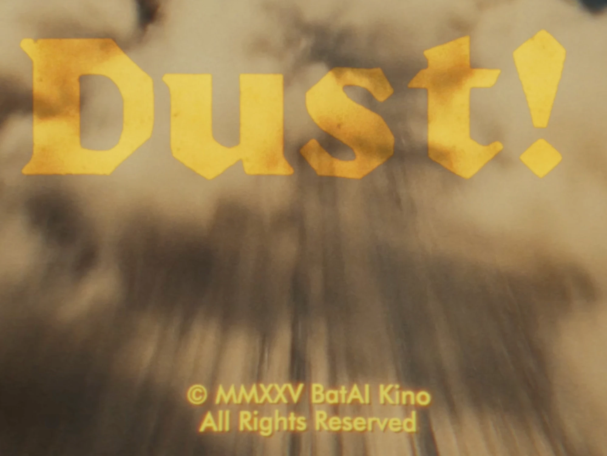
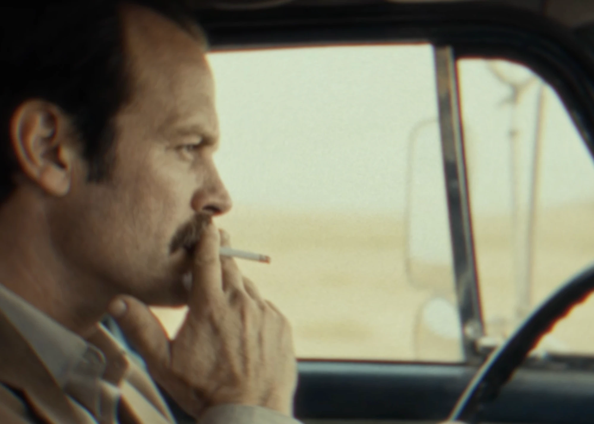
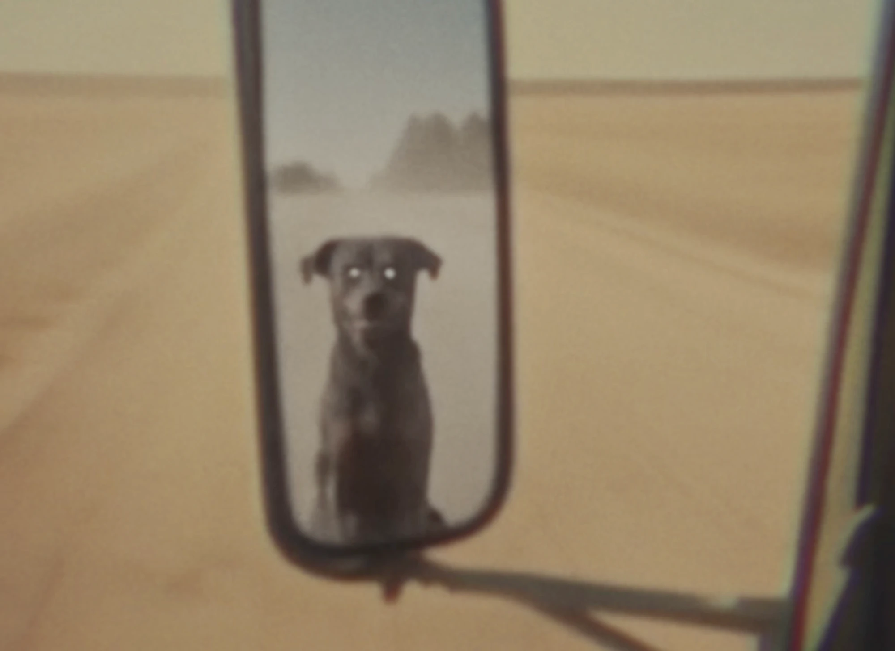

“Un Borracho con Sombrero Me Mostró a Dios”
Déjame contarte quién era yo en 2021.
Era un sándwich de mayonesa. Pan blanco. Con corteza. Sin lechuga, porque la lechuga es un estilo de vida y yo no tenía uno. Era un hombre estable, bastante maduro. Pagaba las cosas a tiempo. Tenía opiniones sobre el hilo del algodón. El COVID todavía no me había arruinado el cerebro, y lo digo en sentido clínico: el mobiliario mental seguía donde lo había puesto el decorador.
A todos los efectos prácticos, era tan aburrido como un sándwich de mayonesa. Y la mayonesa era light.
Después llegó el amigo.
El Amigo Que Todos Tenemos (y Si No Lo Tenés, Malas Noticias: Sos Vos)
Ya sabés el tipo.
El tipo que irrumpe en tu habitación de la residencia en Boston con nada más que un sombrero puesto, agitando una botella de José Cuervo como un monaguillo con un incensario, y anuncia con la confianza de un líder de secta en su tercera esposa: “Viejo. Tenemos que ir a México. Las chicas son un espectáculo.”
Sin pantalones. Sombrero. Fernet de la vida. Un plan. Ese es todo el currículum, y de alguna forma alcanza para gobernar un país chico.
Ese amigo ahora se llama BatAI Kino, y más adelante voy a decir cosas lindas de él, así que disfrutá los próximos párrafos, che, porque son los últimos donde quedás como un elemento disuasivo.
Todo hombre tiene uno de estos. Si estás leyendo esto y no podés identificar al tuyo, dejá la botella y fijate qué tenés en la cabeza.
La Imagen
En algún momento de 2022 me manda una imagen.
Midjourney. Versión 2, creo, que en años de IA es el Cretácico. Para los que llegan tarde: Midjourney V2 generaba manos como bolsas de zanahorias y caras como si alguien le hubiera descripto una cara a una esponja.
La imagen: Mad Max a trompadas con Batman.
La campera de cuero. La capa. Dos puños cruzándose en un manchón de luz naranja. Uno de ellos tenía seis dedos, tal vez siete, tal vez un pulgar con aspiraciones propias. El fondo tenía el color de una guardia de quemados. Era, en términos objetivos, basura.
Y también era la basura más hermosa que había visto en mi vida.
Y entonces dijo la frase. Me acuerdo de la puntuación. Me acuerdo de la pequeña pausa dramática donde la dejó respirar, como un hombre que sabe que está a punto de arruinarle la vida a alguien y quiere saborearlo:
“Y lo hice con solo, digamos, f@$king palabras de mierda.”
Ese día vi a Dios.
No es una metáfora. El arbusto ardía. El arbusto tenía un servidor de Discord. El arbusto aceptaba pedidos en un canal llamado #newbies-12 y los mandamientos salían en una grilla de cuatro, levemente malditos, opción de ampliar disponible.
Cinco Años Después, Acá Estoy
Acá estoy. Haciendo esto para vivir.
No como hobby. No como crisis de los cuarenta con una GPU. Para vivir, con facturas y clientes y una tarjeta de presentación que al yo de 2021 le hubiera hecho escupir el sándwich.
¿Y cómo se ve eso en la práctica, un martes a la noche, a una hora en que la gente decente está durmiendo?
Se ve como yo encorvado sobre una laptop estudiando cómo cuernos se hizo Godzilla Minus One con un presupuesto reportado de menos de $15 millones, y qué lecciones puedo robarle. Con cuchillo. En un callejón.
Es, y sigue siendo, perturbador a nivel espiritual.
Mi alma presentó una queja ante la gerencia. La gerencia es un borracho con sombrero. La queja se usó para prender algo.
Ahora voy a contarte sobre el cortometraje zombi de mi amigo. Pero para llegar ahí tenemos que doblar fuerte hacia un cine sucio en la 42 de Nueva York en 1974, luego un viaje corto a Pittsburgh en 1968, y DESPUÉS podemos hablar del lagarto. Creías que esto era una autopista. Es un trébol diseñado por un borracho. Ya sabés cuál.
Levantá los pies del piso. Está pegajoso por razones.
STOP.
El Grindhouse: Una Iglesia con el Piso Pegajoso
Un grindhouse era un cine barato, los clásicos apretados sobre la 42 en Nueva York, que pasaba películas de explotación una tras otra, todo el día, toda la noche. Kung fu. Pandillas de motos. Caníbales. Mujeres en prisión. Persecuciones filmadas por el tipo que robó el auto. Las copias estaban arañadas hasta la médula, se perdían rollos enteros, y a nadie le importaba, porque pagabas casi nada para sentarte en la oscuridad con desconocidos y ver algo que nadie más te iba a mostrar.
Era una iglesia para los que habían sido echados de la iglesia.
Lo que nos lleva al sumo sacerdote.
Quentin Tarantino no solo veía esas películas. Las memorizaba, las comía, las metabolizaba y las transpiraba de vuelta como Pulp Fiction, Kill Bill y cada película donde alguien da un monólogo sobre una hamburguesa antes de pegarle un tiro a alguien. Es el pibe del grindhouse que creció y consiguió las llaves del estudio.
Y mi amigo, el profeta del sombrero, el hombre sin pantalones y con un plan, está obsesionado con esto. Éramos los dos cinéfilos, nos conocimos en la academia, los dos convencidos de que Tarantino y Rodríguez eran lo más antes de que fuera opinión popular. Cuando salió Grindhouse en 2007, algo en nosotros lo reconoció como una frecuencia: acá hay todo un mundo de películas hechas con dos mangos y puro nervio que el mainstream se tragó entero. Ninguno de los dos le había puesto nombre antes. Después de eso, necesitábamos haberlo visto todo, retroactivamente, de inmediato.
Así que, claro, en 2007, Tarantino y Robert Rodríguez decidieron recrear toda la experiencia.
Rayaron las copias a propósito. Falsificaron rollos faltantes. Era una carta de amor, escrita en sangre y aceite de motor, a las películas que costaban calderilla.
La carta de amor costó entre $53 y $67 millones, según quién cuente.
Se estrenó con unos $11,5 millones el fin de semana de Pascua y cerró con unos $25 millones en EE.UU. Un homenaje al cine barato, hecho caro, murió caro. Tarantino ha dicho en entrevistas que el fracaso le sacudió la confianza. Imaginalo. El hombre que hizo explotar a Hitler en un cine ardiendo, sacudido por el Conejo de Pascua.
Film Threat hizo los números en su momento y estimó el presupuesto en unas 530 veces lo que costaba una película de grindhouse de la época. No se puede comprar el olor a piso pegajoso. Podés intentarlo. Te va a salir sesenta y pico de millones y encima van a partir tu película al medio para los mercados internacionales.
Lo cual hicieron. Fuera de EE.UU., Planet Terror y Death Proof salieron como dos películas separadas.
Guardá ese número. Sesenta y siete millones. Volvemos por él.
Los Muertos Siempre Trabajaron Barato
Acá está el secreto hermoso y sucio de la película de zombis: es el monstruo más barato jamás inventado.
Un vampiro necesita un castillo. Un hombre lobo necesita una escena de transformación que cuesta más que tu casa. Un kaiju necesita una ciudad para pisar.
Un zombi necesita un campo, algo de maquillaje gris, una casa de campo y una docena de amigos dispuestos a arrastrarse por sándwiches. Mayonesa opcional. Los muertos no se sindicalizan.
Esa es toda la genealogía. Romero en un campo de Pittsburgh. Los italianos copiando a Romero con menos plata y más globos oculares. Rodríguez bañando un pueblo entero en vísceras para Planet Terror. Los zombis son el género donde los pibes sin plata pueden hacer la película de verdad, porque el monstruo es simplemente una persona que dejó de preocuparse por la postura.
Y por eso, señoras y degenerados, mi amigo hizo una película de zombis.
DUST!, o: Mi Amigo Hizo la Película
Acá va el elogio, y lo digo en serio, lo cual debería preocuparlo.
El profeta del sombrero hace películas ahora, bajo el sello BatAI Kino (@bataikino en Instagram, vayan a seguirlo, los espero). Y acaba de estrenar un cortometraje zombi llamado DUST!
El signo de exclamación es de él. Se lo ganó.
El hombre que me enseñó arte con IA con una imagen de dos tipos peleando con siete dedos entre ellos, fue y hizo una película de verdad. Con muertos adentro. Y se parece a una copia que alguien sacó del tacho de basura de un autocine en 1976, que es el cumplido más alto que sé dar.

Mirá ese título. Letras de palo amarillo mostaza, chamuscadas y manchadas como si las hubieran guardado al lado de un calefactor desde la época de Carter, flotando sobre una nube de tierra. Eso no es una tipografía. Eso es un olor.
Un camión de basura del color de un pasillo de hospital, con herrumbre que le brota como un sarpullido, bajando un camino de tierra dentro de su propia tormenta de polvo. Todo grindhouse necesita un vehículo con antecedentes penales. Este tiene varios.

Al volante, un hombre con un bigote que tiene su propio plan de retiro, fumando como si el cigarrillo le debiera plata, mirando la ruta con la paciencia de alguien que ya vio el fin del mundo y lo encontró decepcionante.

Y después. El perro. En el espejo lateral. Ahí sentado, con ojos como dos faros del infierno.
Los objetos en el espejo están más cerca, y posiblemente son peores, de lo que parecen.
Un chofer de camión de basura. Una ruta polvorosa. Algo que anda mal con los muertos, algo peor con el perro, y una mosca haciendo más trabajo narrativo que la mayoría de los secundarios de una película de $67 millones. Es desprolija, rara y muy bien hecha. Raro bueno.
Y acá viene el remate. Cada fotograma es IA. Todo. A fondo, todos los modelos del universo, el hombre corrió el zoológico entero. El camión, el bigote, el perro, el polvo. El profeta del sombrero volvió al arbusto ardiente y pidió todo el menú.
Mirá DUST! en el Instagram de @bataikino
Andá a verlo. Los espero. Es más corto que el tiempo que pasaste esta mañana decidiendo si responder ese mail.
Lo que me mata es esto. Ese look desteñido, arañado, cocinado por el sol de los años setenta, es exactamente el look que Tarantino y Rodríguez pagaron hasta sesenta y siete millones de dólares para imitar. Pagaron buena plata para dañar su propia película. Mi amigo llegó ahí con IA, una pila de modelos y un rencor contra los píxeles limpios.
Lo que me llegó: la mosca. Hay una secuencia con una mosca en DUST! que debe haberle llevado meses. Trabajo en esto. Sé lo que cuesta hacer que algo tan pequeño y específico se comporte en un pipeline de IA. Esa mosca se comportó. Esa mosca fue controlada. Por eso sé que el resto no fue suerte.
Eso es el espíritu del grindhouse, el verdadero. Hecho por alguien que quería hacerlo más de lo que quería cobrar por hacerlo.
Hambre. O la tenés o la fingís. El público huele la ficción desde el estacionamiento.
Godzilla Minus One: El Lagarto de $15 Millones Que Se Comió el Almuerzo de Hollywood
Vamos con los números directamente, porque los números son el chiste.
Godzilla Minus One (2023) fue escrita y dirigida por Takashi Yamazaki, quien también hizo los efectos visuales. No los supervisó desde un yate. Los hizo. Su estudio, Shirogumi, manejó el trabajo desde su estudio en Chōfu.
Releé eso. Treinta y cinco personas. Una película grande de Marvel puede tener miles de artistas de VFX en los créditos, repartidos en una docena de estudios en cuatro continentes, la mitad trabajando en Navidad.
Y acá viene la parte que me hace querer tirarme en el piso de la cocina: uno de los cuatro que se llevaron ese Oscar, el compositor Tatsuji Nojima, tenía 25 años entonces, y llegó a las simulaciones de agua porque había estado experimentando con ellas en su casa, por diversión. El océano del que emerge Godzilla, el que te hace sentir físicamente frío en el cine, empezó como el hobby de un pibe.
El océano era un hobby. Dejalo reposar.
No soy un productor de línea japonés. No puedo leer un presupuesto de Toho, y no podría decirte cómo manejan las horas extra en Chōfu sin un traductor, un abogado y un trago fuerte. Pero puedo leer una pantalla, y puedo leer una lista de créditos, y los números son obscenos.
Vale aclararlo en voz alta: el equipo de Yamazaki no usó IA generativa para hacerla. Esta no es una historia de IA. Es una historia de restricciones. Que es exactamente por qué importa a alguien que sí hace cosas con IA.
Cinco Cosas Que Le Estoy Robando a un Lagarto Radioactivo
1. Un solo cerebro sostiene el cuchillo. Yamazaki la escribió, la dirigió y manejó los efectos. Eso significa que la persona que decide qué hace el monstruo es la misma que decide cuánto cuesta el monstruo. Nada de comité de catorce vicepresidentes en una sala de vidrio preguntando si Godzilla puede ser “más cercano al público”. Cada plano pasa por un solo cráneo. El cráneo le dice que no a la mayoría. Ahí está el ahorro.
2. Gastá los planos como una viuda gasta el azúcar. 610 planos. No es mucho para una película de monstruos. La película raciona a su monstruo, y cada aparición pega como un puñetazo porque te tiene en ayunas. Spielberg aprendió esto cuando su tiburón mecánico no paraba de romperse en Tiburón, y es al parecer muy fan de este lagarto. El efecto más barato del mundo es el que no mostrás. El segundo más barato es el que mostrás una sola vez, perfectamente.
3. Contratá al pibe que lo hace por diversión. El tipo del agua jugaba con océanos en su propio tiempo libre. No se puede pagar eso. Solo podés encontrarlo, alimentarlo y quitarte del camino. Cada estudio del mundo está tratando de comprar pasión con un paquete de beneficios. Shirogumi encontró a un tipo que ya hacía océanos gratis y le dio el Pacífico.
4. La historia es el efecto más barato del edificio. El corazón de Minus One no es el aliento atómico. Es Kōichi Shikishima, un piloto kamikaze que no se animó, cargando esa vergüenza por el Tokio en ruinas de la posguerra. La culpa no cuesta nada. El duelo no cuesta nada. Un hombre tratando de perdonarse a sí mismo no cuesta nada. Y hace que cada dólar del lagarto rinda tres veces más, porque de verdad te importa quién queda aplastado.
5. No se puede comprar lo barato. Y acá vuelve el número de sesenta y siete millones. Grindhouse gastó una fortuna para imitar la pobreza. Godzilla Minus One se hizo bajo límites reales y los convirtió en un estilo. Uno es un pibe rico en jeans rotos de $400. El otro es un pibe cuyos jeans son así nomás. El público sabe la diferencia. Siempre sabe la diferencia.
Bueno, Listo, Acá Van Mis Contraargumentos
Dos objeciones, y son buenas, así que las tomo yo antes que la sección de comentarios.
Uno: la comparación de presupuestos es peras con mandarinas. Un presupuesto de producción japonés no es un presupuesto de Hollywood. Los costos laborales difieren, Shirogumi es un estudio propio que no marca precios como un proveedor externo, y la supuesta baratura levantó cejas. Cuando el número de “35 artistas” empezó a circular, la gente preguntó si un equipo pequeño con un presupuesto mínimo no significaba que alguien estaba siendo exprimido, y Yamazaki públicamente rechazó ese encuadre. Justo. “Lo hicieron por $15 millones” puede transformarse calladamente en “todo el mundo debería hacerlo por $15 millones”, y así terminás con artistas durmiendo bajo sus escritorios. Un milagro no es un modelo de negocio.
Dos: las herramientas baratas no hacen buenas películas. Esta va directamente a mi propia industria. En julio de 2026, Neill Blomkamp, el de District 9, estrenó Nightborne, un corto zombi de 13 minutos hecho íntegramente con herramientas de video IA. Críticos y espectadores le cayeron encima, calificándolo de producto genérico, señalando las inconsistencias visuales y el trabajo de cámara desarticulado. Si un director nominado al Oscar con una premisa interesante puede recibir eso, las herramientas no son el talento. Las palabras hacen imágenes ahora. Las palabras no hacen gusto.
Que es exactamente por qué DUST! me importa. Mismo tipo de herramientas que Nightborne. Todo IA, todos los modelos que pudo conseguir. Y no parece producto genérico. Parece una copia de autocine con rencor, porque alguien con gusto estaba al volante. Las herramientas no trajeron el gusto. Lo trajo él.
Ambas cosas son ciertas. Ninguna cambia la lección. Una cámara barata es una puerta, no un director. El lagarto demostró que podés cruzar la puerta. Nadie prometió que ibas a saber adónde ibas una vez adentro.
De Vuelta al Sándwich
Acá estoy, cinco años después del sombrero.
Sigo siendo un sándwich de mayonesa, sinceramente. Pan blanco. Con corteza. Salvo que ahora hay un monstruo adentro, atravesando la rodaja de arriba, y la mayonesa está por todos lados, y tengo que explicarles a los clientes que sí, el monstruo es el modelo de negocio.
Mi amigo, mientras tanto, pasó de una imagen de dos tipos peleando con siete dedos entre ellos a una película zombi de verdad con una historia de verdad sobre muertos de verdad. De seis dedos a DUST! en cuatro años. Romero le pagaría una birra. Tarantino le pagaría una birra, y después se la explicaría durante cuarenta minutos.
Y sigo pensando en esa frase. La que me abrió el cerebro como un huevo en una vereda caliente:
”Y lo hice con solo, digamos, f@$king palabras de mierda.”
Tenía razón. Estaba borracho, sin pantalones y espiritualmente sin supervisión, y tenía razón. Fueron palabras. Siguen siendo palabras. El lagarto fue palabras primero, en la cabeza de Yamazaki, antes de ser 610 planos. DUST! fue palabras primero. Grindhouse fue palabras primero, y después fue sesenta y siete millones de dólares, y las palabras se ahogaron.
Perturbador a nivel espiritual. Todos los días. Bárbaro.
Ahora andá a ver DUST! Seguí a @bataikino.
Preguntas Rápidas Desde el Gallinero
¿Cuál fue el presupuesto de Godzilla Minus One?
Se reportó ampliamente en menos de $15 millones, con la mayoría de estimaciones entre $10 y $15 millones. Recaudó más de $105 millones en todo el mundo y ganó el Oscar 2024 a Mejores Efectos Visuales.
¿Cuántos artistas de VFX trabajaron en Godzilla Minus One?
Unos 35 artistas en el estudio japonés Shirogumi, entregando aproximadamente 610 planos de efectos en unos ocho meses. El director Takashi Yamazaki también fue el supervisor de VFX de la película.
¿Godzilla Minus One usó IA?
No se usó IA generativa para los efectos visuales. El equipo usó herramientas convencionales como Maya para animación, Houdini para simulación de agua y Nuke para composición.
¿Por qué fracasó Grindhouse?
Grindhouse (2007) costó entre $53 y $67 millones reportados y recaudó unos $25 millones en EE.UU. Las explicaciones habituales incluyen su duración de más de tres horas, el estreno en fin de semana de Pascua y el público que no entendió el concepto de doble programa. Fuera de EE.UU., Planet Terror y Death Proof se estrenaron como películas separadas.
¿Es Planet Terror una película de zombis?
Más o menos. La mitad de Grindhouse de Robert Rodríguez es una comedia de terror sangrienta sobre sobrevivientes que combaten personas convertidas en criaturas similares a zombis por un gas bioquímico filtrado.
¿Cuánto costó La noche de los muertos vivientes?
El original de George A. Romero de 1968 se hizo por unos $114.000 en los alrededores de Pittsburgh, y definió la película de zombis moderna.
¿Dónde puedo ver el cortometraje zombi DUST!?
Es de BatAI Kino y está en Instagram en @bataikino. Fue hecho íntegramente con IA, usando una larga lista de modelos.